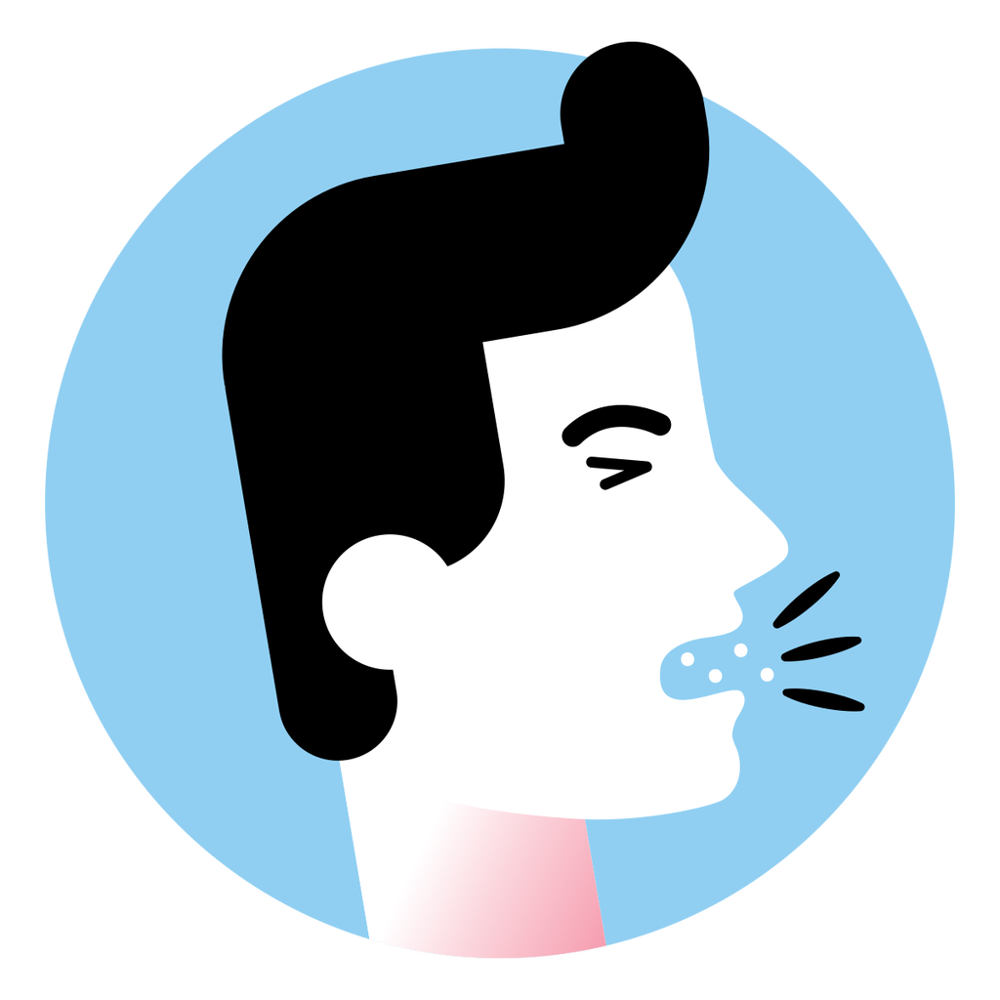
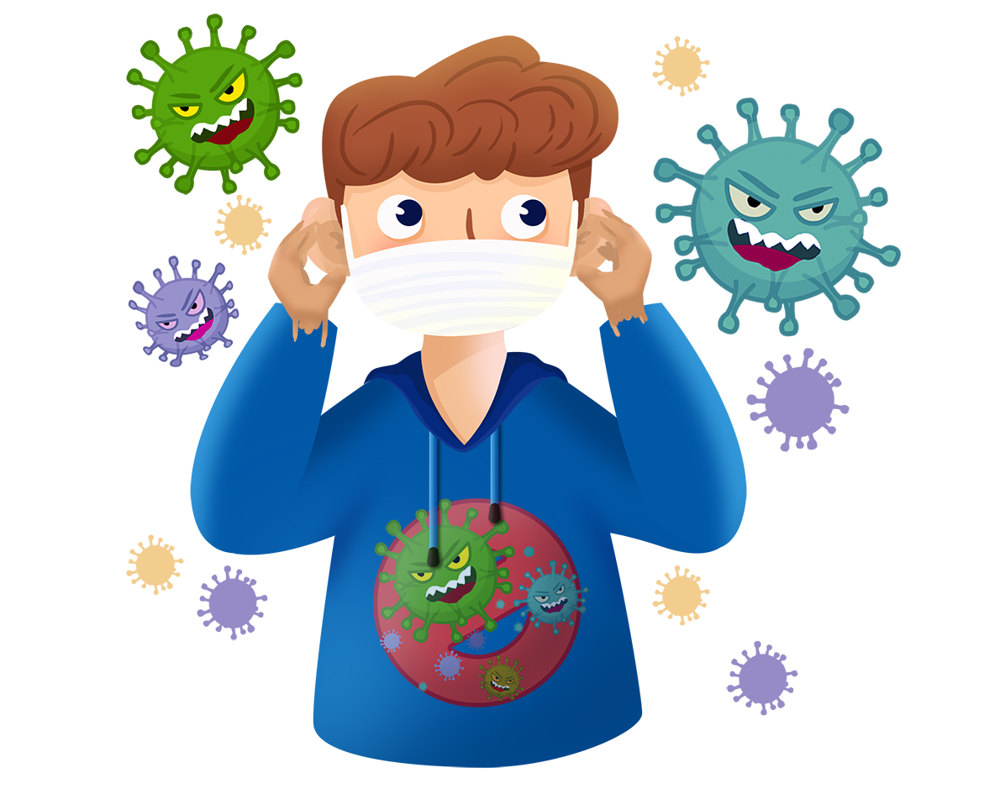

Што е COVID-19 и каде се појавува за прв пат?

На 31 декември 2019 година, СЗО доби информација за појава на епидемија на пневмонија од непознато потекло во Вухан, Кина. Кинеските власти го идентификуваа новиот коронавирус на 7 јануари 2020 година, а вирусот беше привремено именуван "2019-nCov". На 11 февруари, болеста предизвикана од овој вирус го доби името Коронавирус 2019 година, или "COVID-19". Оваа болест е предизвикана од новиот коронавирус, што значи дека не е пронајдена претходно. Како резултат, сè уште нема специфичен третман или вакцина.
Кои се симптомите на овој вирус?
Корона вирусот ги напаѓа горните дишни патишта и се манифестира со симптоми слични на настинка, а често се јавуваат и главоболки и зголемена температура која може да трае неколку дена. Ризична група се лицата со послаб имунолошки систем, односно децата и повозрасните лица. Со оглед на тоа што симптомите се како на настинка, консултирајте се со лекар, но не кревајте паника, сепак во голем дел случаи може да се работи за обична настинка.
Како да се заштитам од новиот вирус?
-Мијте ги рацете - сапунот или гелот за раце можат да го убијат вирусот.
-Покривајте ги устата и носот при кашлање или кивање - најубаво со марамче - и потоа измијте ги
рацете, за да спречите ширење на вирусот.
-Избегнувајте допирање на очите, носот и устата - ако вашите раце допираат површина загадена од
вирусот, тоа може да го внесе во вашето тело.
-Не се приближувајте до луѓе што кашлаат, киваат или имаат температура - тие во воздухот може да
распрснат мали капки што го содржат вирусот - идеално, држете се на 1 метар од нив.
-Следете ги препораките на Министерство за Здравство, движете се што е можно помалку, односно не
излегувајте без потреба.